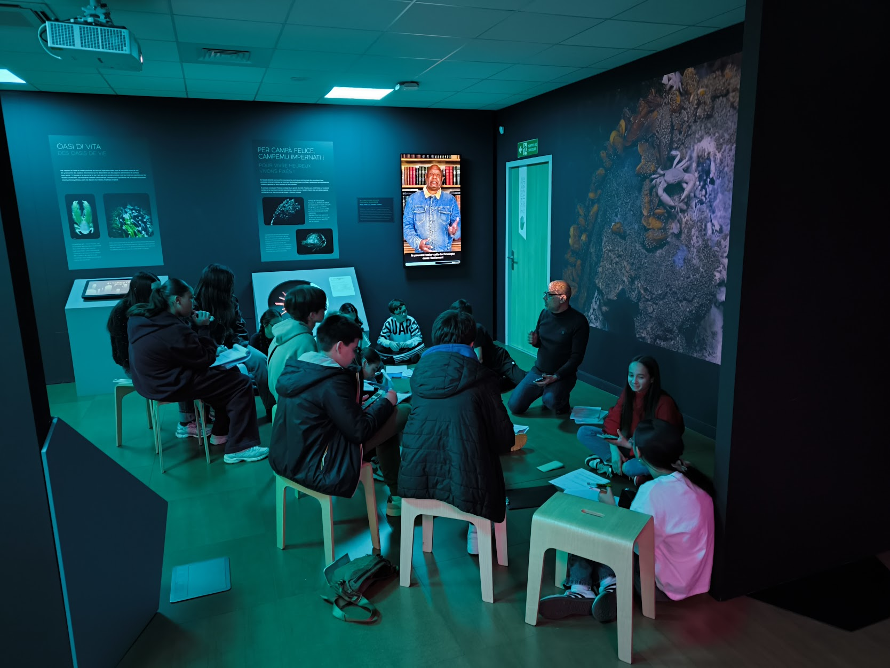

Dans le cadre de leur ambitieux projet interdisciplinaire « Océan », qui mobilise également les collèges Simon Vinciguerra et Giraud, les élèves de 4e2 du collège Montesoro ont eu l'opportunité de se rendre à la Casa di e Scenze de Bastia à trois reprises pour explorer l'exposition « Océan, une plongée insolite ». Ces immersions successives visaient à les sensibiliser aux enjeux cruciaux liés à la préservation des océans et à approfondir leurs connaissances sur ce milieu aussi fascinant que vital.

Explorer l'Exposition « Océan, une plongée insolite »
Chacune des visites a permis aux élèves de parcourir et d'explorer les différents aspects de l'exposition. Ils se sont familiarisés avec les mystères des abysses, ont découvert la diversité des écosystèmes marins et ont exploré les mythes et légendes qui entourent les océans. Un questionnaire accompagnait leur parcours, transformant l'exploration en une quête active de connaissances au sein même de l'exposition.
Ateliers et Temps de Travail
Au-delà de l'exploration libre de l'exposition, certaines visites ont inclus des temps dédiés à des ateliers spécifiques et à des travaux dirigés.
Atelier Mathématiques et Langue Corse
Lors d'une de ces visites, une partie de la classe a participé à un atelier unique, mené par M. Chiarelli, leur professeur de mathématiques, entièrement en langue corse. À partir d'un document spécialement conçu, les élèves ont travaillé en groupes puis individuellement sur des notions mathématiques fondamentales appliquées au monde marin, notamment l'étude des microrubus (micro-organismes marins) comme les diatomées ou les ciliés.
Cet atelier a été l'occasion d'étudier l'ordre de grandeur du rubu, de déterminer l'écriture scientifique de différents micro-organismes, et d'évaluer les tailles en utilisant les puissances de 10. Les élèves ont également été amenés à calculer le volume de certains radiés à partir de leurs formes géométriques (cône, tronc de cône, sphère) et à effectuer des conversions d'unités. L'atelier a aussi abordé oralement les notions d'échelle, de proportionnalité et de symétrie axiale à travers l'observation de maquettes d'organismes exposées.
Voici le détail de cet atelier, tel que décrit par M. Chiarelli :
U 6 di ferraghju, l’elevi di a quarta ( 4a 2 ) anu travagliatu durente una mezaghjurnata à a Casa di scienze, à partesi di un documentu sviluppatu da u so prufissore di matematiche, M. Chiarelli.
Per st’annu, a spusizione hè urientata versu a tematica di l’uceani in lu quatru di u prughjettu epunimu.
L’attinzione s’hè arricata annantu à l’ordine di grandezze di u rubu ; era un’ uppurtunità di studià qualchi urganīsimu cum’ e diatumee o i ragiati.
L’elevi, primu in gruppi, è in un sicondu tempu, di manera individuale, anu cumplettatu u documentu inAcù l’aiutu di u prufissore.
Cusì, anu diterminatu a scrittura scientifica di ogni microurganīsimu à sapè quella di a diatumea, quella di u cigliatu… Dopu, anu pulsutu valutà a maiurezza di u microrubu, u nanorubu, u picorubu è u femtorubu, aduprendu e putenze di 10. Cù e spressione di ogni vulumu di i solidi ( cono, cono truncatu, botte, sfera ), duvianu trasfurmà a spressione data è calculà u vulumu di u ragiatu ( a struttura era riprisentata ). L’elevi duvianu ancu effettuà qualchi cunversione per risponde à l’ultime quistione di stu travagliu prāticu. Una parte de l’espusizione prisentava machette cù aggrandimenti de l’urganīsimi riprisentati. Avemu fattu un travagliu à l’urale per rammintà e nuzione di scale, di prupurziunalità è ancu di simetria assiale ( di certe spezie di rubu cum’ e diatumee o i copepodi. ).
Stu mumentu hà permessu di fundià nuzione impurtantīssime di u prugramma di a quarta in matemātica è ancu di scopre è amparà un lessicu scientīficu.
Una spirienza à rifà…
Cette expérience a brillamment conjugué l'apprentissage de notions mathématiques essentielles du programme de 4e avec la découverte d'un lexique scientifique spécifique, le tout valorisant le patrimoine linguistique corse.
Atelier Création de Blog et Compétences Numériques
Lors d'une autre visite ou pendant un temps dédié, l'autre groupe, accompagné par M. Cormi, leur professeur de technologie, s'est initié au monde du blogging. Cet atelier a été l'occasion de découvrir les outils numériques nécessaires à la création d'un site web, de réfléchir à la structure idéale d'un blog informatif et de commencer à organiser le travail collaboratif au sein des groupes.
L'objectif final de cet atelier est ambitieux : chaque groupe de quatre élèves créera son propre blog entièrement dédié aux océans et à leur préservation. Les thématiques choisies par les élèves pour leurs blogs sont variées et témoignent de leur curiosité pour les multiples facettes du monde marin :
- L’histoire de l’exploration sous-marine : Des premiers scaphandres aux robots high-tech.
- Le plancton, un monde invisible essentiel à la vie marine.
- La vie dans les grands fonds marins et ses créatures fascinantes.
- Les mythes et légendes inspirés par l’océan.
- Les menaces actuelles qui pèsent sur l’océan (pollution, surpêche, etc.).
- La biodiversité unique des monts sous-marins et leur importance écologique.
Ce travail d'équipe allie ainsi créativité, développement de compétences numériques concrètes et une sensibilisation accrue à la cause environnementale marine.

Travail en Auditorium : Analyse et Consolidation
En complément des explorations et des ateliers, un temps de travail en auditorium a également fait partie de l'expérience à la Casa di e Scenze. Ce moment a permis aux élèves d'analyser des textes, de répondre à des questions, de visionner des films documentaires éclairants sur les océans, et de participer à des QCM, contribuant ainsi à consolider leurs apprentissages de manière active et variée.
Conclusion : Une Immersion Fructueuse et Plurielle
Ces trois visites immersives à la Casa di e Scenze ont constitué des étapes très positives et fructueuses dans le Projet Océan des 4e2 Montesoro. Elles ont non seulement permis aux élèves de "plonger" concrètement au cœur des enjeux marins mais aussi de poser les bases essentielles pour les explorations et les réalisations qui jalonneront le reste de leur année scolaire. L'engagement interdisciplinaire et la diversité des activités proposées lors de ces visites illustrent parfaitement la richesse de ce projet. À suivre… les prochaines aventures océaniques de la classe !